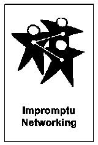
Impromptu Networking: rompere il ghiaccio in 20 minuti
Impromptu Networking fa muovere le persone in coppie con domande brevi. Rompe il ghiaccio e crea connessioni in pochi minuti.
Strutture per la fase di empatia nel design thinking.
11 strutture

Impromptu Networking fa muovere le persone in coppie con domande brevi. Rompe il ghiaccio e crea connessioni in pochi minuti.
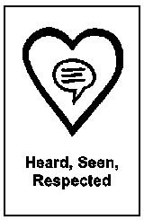
HSR sviluppa l'ascolto empatico: ogni persona racconta un episodio in cui non si è sentita ascoltata, vista o rispettata, e il gruppo...
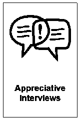
Le Appreciative Interviews fanno emergere storie positive a coppie, per costruire su ciò che già funziona nel team.
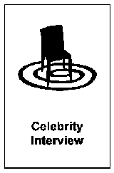
Trasforma una presentazione frontale in una conversazione guidata con il gruppo.
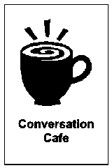
Il Conversation Café è una struttura che permette di facilitare conversazioni profonde e costruttive, riducendo il dibattito e...
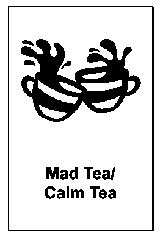
Mad Tea è una Liberating Structure dinamica a due cerchi concentrici: le persone si affrontano a coppie e rispondono a domande brevi a...
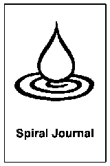
Spiral Journal è una Liberating Structure di riflessione individuale: ogni persona disegna una spirale su un foglio, risponde a...
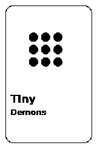
Tiny Demons è una Liberating Structure creativa che aiuta i partecipanti a esternare e trasformare le proprie paure in modo giocoso e...
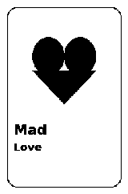
Mad Love è una variante potente e intima di Mad Tea, progettata per creare connessioni profonde tra i partecipanti attraverso domande...
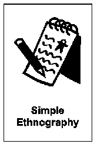
Permettere ai partecipanti di trovare soluzioni innovative immergendosi nelle attività delle persone con esperienza diretta sul campo...
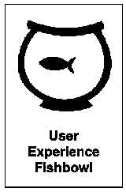
User Experience Fishbowl permette a un piccolo gruppo di persone con esperienza diretta sul campo di condividere le proprie conoscenze...
Usa strutture che danno voce a chi vive il problema: Appreciative Interviews, Heard Seen Respected, Simple Ethnography. L'obiettivo è capire bisogni prima di proporre soluzioni.
User Experience Fishbowl mette al centro chi ha vissuto il servizio. Conversation Cafe crea spazio per storie condivise. Scegli in base a quante persone coinvolgi.